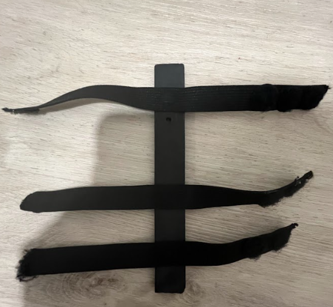
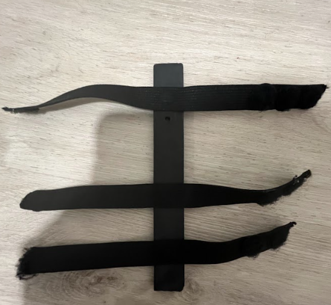

From researching, we learned that there are a few, but not that many proper devices, specifically for violin and viola,
built for helping beginner musicians with correct hand posture. By taking our time, and learning about proper and improper
features of a hand brace, we were able to take both those factors and combine positive effects into one prototype.
Our design is built of velcro, a frame, & elastic bands. The velcro straps around your wrist & palm, whilst the frame
prevents movement between the wrist and palmar arch. The elastic bands measure from 17-20 cm, whilst the frame is around 20cm.
This graph, specifically, showcases the many musicians who have gain/experienced carpal tunnel syndrome from playing
an instrument. Around 62.5% of people who are experienced muscicians have either been though or are developing CTS,
whilst the other 37.5% are not. As you can see, this is a significant issue that can be spotted.